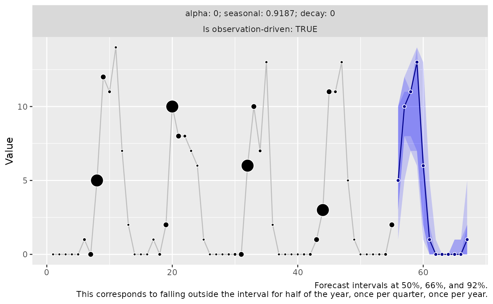
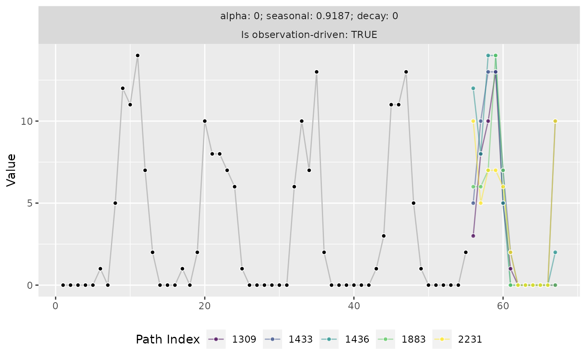

Working with Forecast Sample Paths
Source:vignettes/working_with_forecast_sample_paths.Rmd
working_with_forecast_sample_paths.RmdForecast sample paths are the best. In contrast to quantiles, you can aggregate them!
Most forecast model implementations only aim to provide select quantiles of the forecast distribution to quantify the forecast uncertainty—if at all. While this suffices for applications that are strictly defined and will not extend their use case in the future, quantiles can be very restrictive in a business context where one needs to perform arbitrary and often unforeseen aggregations across time horizons, hierarchies, and the like.
If you only have quantiles, you can’t do it. Quantiles can’t be aggregated.
Maybe you can rely on an assumption of independent Normal distributions, and sum those. But auto-correlation would get lost.
In contrast, sample paths are neat because they provide a representation of the joint forecast distribution over time horizons. In contrast to marginal quantiles, you can first aggregate sample paths in arbitrary ways, and then take quantiles to summarize the distribution of an arbitrary aggregation of interest.
Let’s fit a model…
y <- rpois(n = 55, lambda = pmax(0.1, 1 + 10 * sinpi(6:59 / 6)))
model <- threedx::learn_weights(
y = y,
period_length = 12L,
alphas_grid = threedx::list_sampled_alphas(
n_target = 1000L,
include_edge_cases = TRUE
),
loss_function = loss_mae
)… and generate forecast sample paths:
forecast <- predict(
object = model,
horizon = 12L,
n_samples = 2500L,
observation_driven = TRUE
)The forecasts are stored in a threedx_paths object,
class(forecast)
#> [1] "threedx_paths"of which the main component is a matrix of sample paths (each row is a sample path, each column a forecast horizon):
# printing only the first 5 of `n_samples` sample paths
forecast$paths[1:5, ]
#> [,1] [,2] [,3] [,4] [,5] [,6] [,7] [,8] [,9] [,10] [,11] [,12]
#> [1,] 2 8 7 13 6 1 1 0 0 0 1 0
#> [2,] 5 11 11 13 6 2 0 0 0 0 0 2
#> [3,] 3 8 7 7 2 0 0 0 0 1 0 0
#> [4,] 3 11 8 11 1 0 0 0 0 0 0 0
#> [5,] 5 12 13 13 2 0 0 0 0 0 0 1Summarize Over Sample Paths
To summarize the forecast at each horizon, we can compute the mean…
… or any quantile…
… or ask specific questions such as “what is the probability of an observation larger than zero?”:
Summarize Over Horizons
Similarly, we can summarize along the n_samples
dimension of the matrix.
We can ask for the total value across all horizons by sample path…
rowSums(forecast$paths)[1:5]
#> [1] 39 50 28 34 46… or for the total value in the six-month period after horizon three…
rowSums(
forecast$paths[, 4:9]
)[1:5]
#> [1] 21 21 9 12 15… or how many of the next twelve months will exhibit a value of zero:
rowSums(
forecast$paths == 0
)[1:5]
#> [1] 4 5 6 7 6Summarize Over Horizons And Sample Paths
Usually, we want to follow up an aggregation across horizons by an aggregation across sample paths.
We can get the median sum for the next twelve months…
… the 95% quantile for the six-month period after horizon three…
… or the probability of zero value at horizons 7 through 9:
Visualize Sample Path Forecasts
If you have ggplot2 installed, threedx
provides two ways of visualizing a threedx_paths object
using the autoplot() method.
The default is a graph of marginal quantiles of the sample paths for each forecast horizon as many other forecast packages would provide it:
autoplot(forecast)
An alternative option specified via the argument
method = "paths" is the visualization of individual sample
paths as lines. Since a graph of sample paths becomes very crowded very
quickly, by default only n = 5 randomly chosen paths are
plotted:
autoplot(forecast, method = "paths")
While forecast quantiles sometimes give the impression that a model expects a flat line of future observations. Visualizations of sample paths make clear that any given future scenario is anything but a flat line.